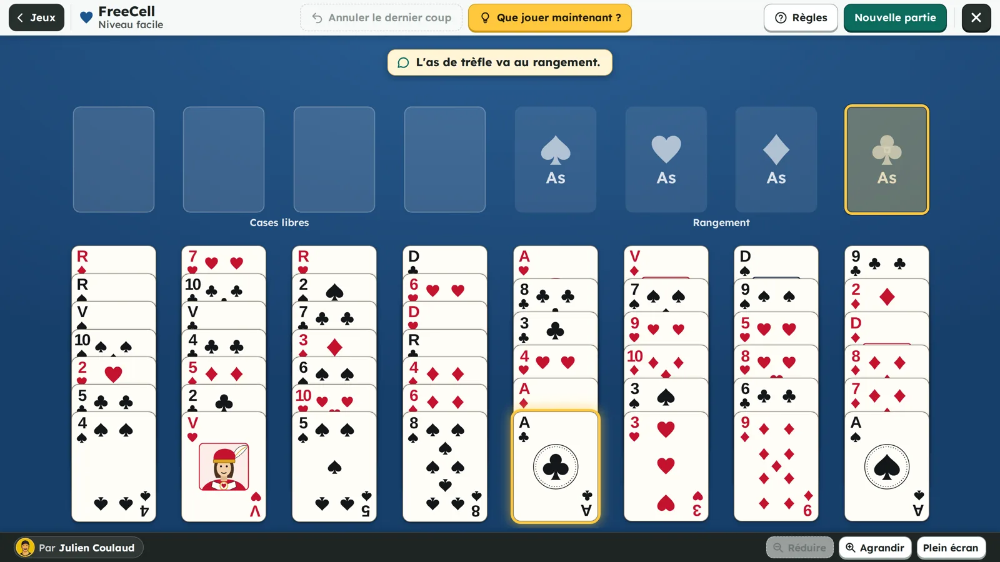

Solitaire : révéler les cartes au fil de la partie
Dans le solitaire Klondike, certaines cartes commencent face cachée. Déplacez les cartes visibles pour découvrir les autres. Si vous ne trouvez aucun déplacement, cliquez sur la pioche pour retourner une carte.

Pour un premier coup, cherchez un 7 rouge sur un 8 noir. Si ce déplacement expose une carte cachée, vous gagnez une nouvelle possibilité. Le guide du solitaire explique aussi comment remplir les piles de rangement.
FreeCell : tout voir avant de jouer
Au FreeCell, toutes les cartes sont face visible. Vous disposez de quatre cases pour mettre des cartes de côté. Une case occupée réduit la place disponible pour déplacer une suite.

Pour commencer, repérez un as près du bas d’une colonne. Cherchez où déplacer la carte qui le recouvre. Si aucun déplacement direct ne convient, une case libre peut vous donner accès à l’as. Le guide du FreeCell explique comment préserver de la place.
Lequel choisir ?
Choisissez le solitaire si vous aimez découvrir de nouvelles cartes à mesure que vous avancez. Choisissez le FreeCell si vous préférez voir toutes les cartes avant de décider. Dans les deux jeux, vous pouvez essayer le niveau facile et demander une aide si vous êtes bloqué.
Envie de cartes avec des adversaires à l’écran ? Essayez la Dame de pique ou le rami contre l’ordinateur.